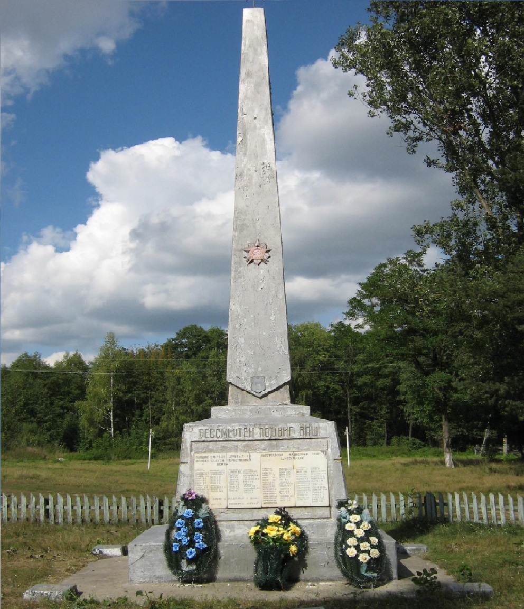

Обелиск с 2 мемориальными плитами
Возле клуба похоронены 63 жителя деревень Озаричи, Клетная,
Соколовка, расстрелянных немецко-фашистскими захватчиками
в годы Великой Отечественной войны. В 1968г. на могиле установлен
обелиск с 2 мемориальными плитами. На первой – имена жертв
фашизма, на второй – имена 40 воинов-земляков, погибших в боях
за Родину в 1941-45гг.
